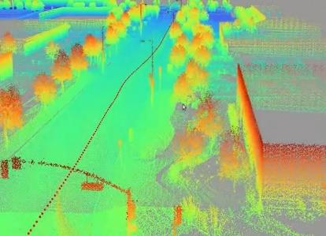
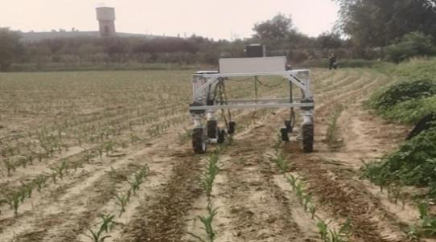

量产级建图架构
参与设计 EXNGP 路网算法架构，负责多趟增量建图、闭环优化与车端准入防线，推动纯视觉增量建图能力从公开道路扩展到封闭园区。

Technical Focus
参与设计 EXNGP 路网算法架构，负责多趟增量建图、闭环优化与车端准入防线，推动纯视觉增量建图能力从公开道路扩展到封闭园区。
从 APA VLA 预研到园区 VLA2.0 导航模块 Owner，贯通底图数据生产、vision prompt 表达、SFT 合训与问题闭环。
面向 OCC 训练、闭环仿真与 VLN 仿真需求，建设语义标注、几何重建、评估协议与 CI 回归流程。
具备 SLAM、VIO、SfM、多视角几何、参考线生成、数值优化、路网建图与导航决策的完整技术背景。
Selected Work
担任园区 VLA 导航模块 Owner，带领 3 人小组，主导园区导航业务从 0 到上车的全链路设计，贯通园区导航底图数据生产、vision prompt 表达、VLA 后训练与问题闭环。
作为 EXNGP 路网算法架构共同设计者，负责多趟增量闭环优化与 MapChecker 车端路网准入防线，支撑园区 / 地库任意地点拉起导航和车位到车位能力。
面向智驾平台闭环仿真与机器人 VLN 闭环仿真，搭建纯视觉 OCC 数据生产链路，落地 SAM3 分割、多视角语义一致性投票与深度 refine 网络。
从 0 到 1 搭建公司首条端到端 APA VLA 预研链路，覆盖数据、AFT、SFT、RL、开环仿真与闭环仿真，为园区 VLA2.0 奠定基础。
负责参考线生成核心模块，设计三次多项式与五段式参考线算法；Logsim 闭环评测中引导线通过率由 80%+ 提升至 99%+。
Portfolio





Experience
负责 FNGP 建图、EXNGP 路网增量建图、园区 VLA2.0 导航、闭环仿真场景重建等方向的核心算法研发与架构设计。
负责城区 NOA 在线地图构建中的参考线生成，覆盖常规道路、交换区、路口、汇入汇出等复杂场景，提升引导线安全性、可达性、平滑性与时序稳定性。
提出 DR-SLAM 系统，相关论文发表于 Advanced Robotics，并完成轮椅床平台 A 到 B 自主导航验证。
Contact